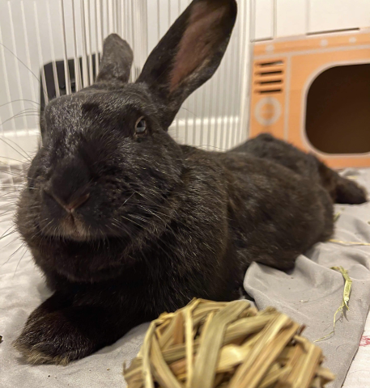

Ramonda
Breed: New Zealand
Sex: Female
Age: 4 Years, 2 Months
Weight: 10.8 Pounds
Bio
This is Ramonda, named after the queen of Wakanda in the Black Panther movie, because she’s so stately and an old soul bunny. She’s very calm and very wise. How many bunnies could come from living in a less than ideal outdoor situation and have excellent litter box habits and take great care of 11 babies? She truly is a queen bunny. She loves treats and is an expert requester of treats (queens never beg). She likes head pets and attention but is also a pretty chill bunny. Her foster mom forgets to close and latch the pen and she’s quite content to stay put. As her babies are weaned and she gets her independence back, we’ll discover more about her personality.
Want to Support Me?
To support me, or any of the sanctuary rabbits at the IHRS, please Donate to our GoFundMe if you are able.